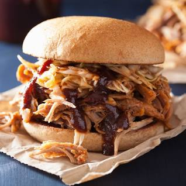

Pull Pork BBQ

This recipe will help you create a wonderful and delicious pull pork bbq that can be used to make sandwiches, casorols, and many more.
In this recipe I will be giving you my personal spice rub, but you all are more than welcome to alter it to your liking. I will also make sure to give you the instructions on how to prepare, how to cook, and what you need to do after the cook.
Spice Rub
- 1/2 cup of Paprika
- 1/2 cup of Salt
- 1/2 cup of Sugar
- 1/2 cup of Granulated Garlic
- 1/4 cup of Granulated Onion
- 1/4 cup of Chili
- 1/4 cup of Cumin
- 2 Tablespoons of Fresh Cracked Peppper
- 2 Tablesppons of Dry Mustard
- 1 Tablespoon of Cayenne Pepper
Prep Process, this should be done the day before the cook.
- If your pork has more fat than you would like feel free to cut some off, but don't cut to much because the fat hold all the flavor and keeps the meat moist and juicy.
- You want to cover your pork with a binder, I like to use mustard but other use siracha, hot sauce, ect...
- After putting the binder on make sure to put your spice rub evenly.
- Cover the pork lightly with plastic wrap and put it in the fridge until cook day.
- Pull the pork out from the fridge about 1 hour before the cook.
Cook Day
- Remember that not everones smoker is the same so cook time could vary, also if you have a bone in it could change the cook time.
- I recommend Apple wood for smoking but you cannot go wrong with hickory, cherry, pecan, or mesquite.
- Once you have decided what wood you want to use, get your smoker going started and gradually bring it up between 225-250 f.
- I recommend you to place your pork with the fit facing up, but if your smoker has any fire that could directly come in contact I recommend fat down.
- Durring the first 1.5 hour make sure to have a spray bottle with either water, apple juice, apple cider, or beer.
- Spray your meat after about every 1-1.5 hours.
- The rule of thumb is for every pound of pork you need to cook for about 2 hours, or until 200-205 f.
- Once you cooked your pork to the temp or have reached the ammount of time pull it off and wrap it with aluminum foil.
Put the foiled up pork into a cooler and let it rest for about 1-2 hours.
- After the rest period is over, you should be able to use your hands and pull it apart. Enjoy.
Back to home page